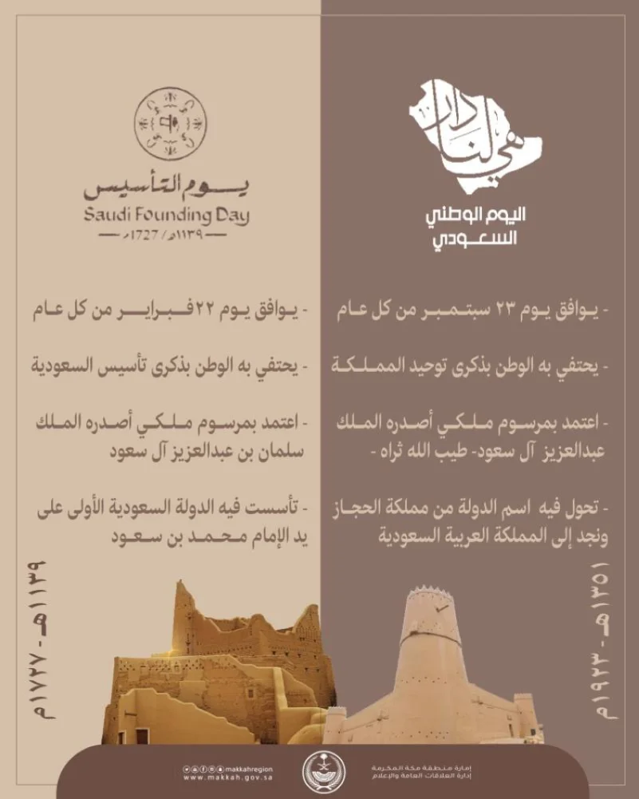
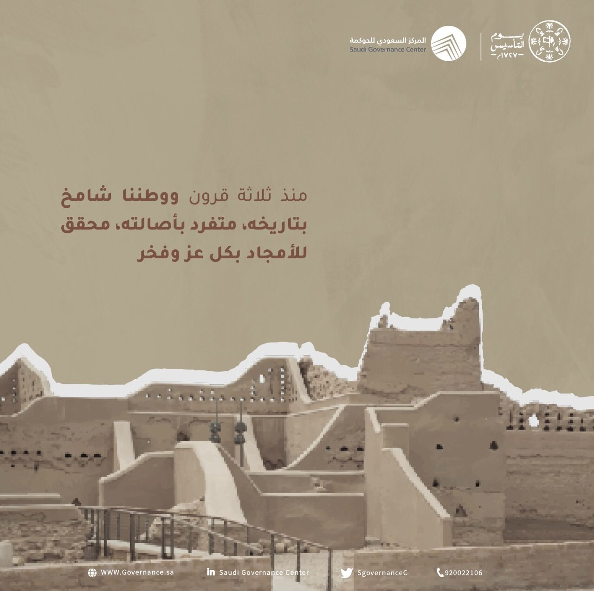
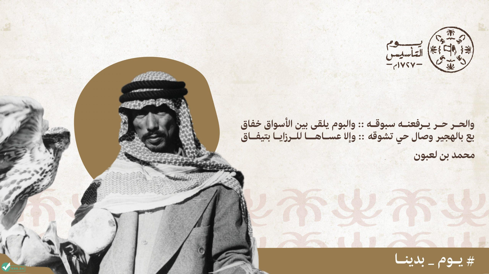
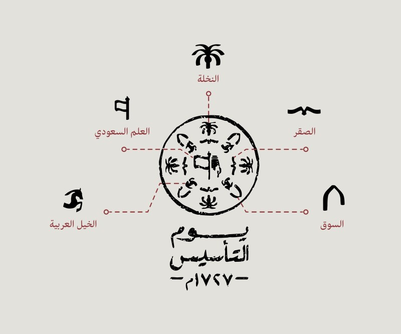

لم تكن البداية قريبة، بل تتجذر لزمنٍ ما قبل الإسلام، حيث قَدِم بنو حنيفة إلى اليمامة في مطلع القرن الخامس الميلادي، واستقروا في وسط الجزيرة العربية ليأسسوا اليمامة التي تمركزت في منطقة العارض في نجد؛ على ضفاف وادي حنيفة، لتصبح بعد ذلك جزءاً من الدولة النبوية عند ظهور الإسلام. وبعد انتهاء الخلافة الراشدة، تزعزع الاستقرار في الجزيرة العربية، وساد فيها الإهمال وعدم الاستقرار والضعف وهُجرت المنطقة وأصبحت في طي النسيان.
حتى عاد الأمير مانع بن ربيعة المريدي الحنفي، ليكمل مسيرة عشيرته "بني حنيفة"، وذلك في منتصف القرن التاسع الهجري، وتحديداً في عام ٨٥٠م/١٤٤٦م، حيث تمكّن الأمير من العودة إلى وسط الجزيرة العربية حيث كان أسلافه، وكان قدومه اللبنة الأولى في مراحل تأسيس الدولة السعودية الأولى التي ستبرز لاحقاً، عندما أسس مدينة الدرعية الثانية -والتي تكونت من غصيبة والمليبيد-، لتكون المدينة القابلة للتوسع وتحقيق الأمن والاستقرار، وهي مختلفة عن الدرعية التي كانوا يستقرون على أرضها بالقرب من القطيف شرق الجزيرة العربية.
وبعد أكثر من ٢٨٠ عاماً تعاقب فيها أبناء مانع المريدي وأحفاده على إمارة الدرعية، تهيأت المنطقة لمرحلة جديدة وذلك عندما تولى الإمام محمد بن سعود الحكم في منتصف عام ١١٣٩ه (فبراير ١٧٢٧م) حيث نقل الدرعية من الضعف والانقسام، إلى توحيدها واستقلالها السياسي، ليؤسس الدولة السعودية الأولى، وعاصمتها الدرعية.
ولد الإمام محمد بن سعود بن محمد بن مقرن في الدرعية عام ١٠٩٠ه (١٦٧٩م) ونشأ وترعرع فيها، واكتسب خبرة من التجارب التي خاضها حينما عمل إلى جانب والده وجده أثناء توليهم الأمارة، مما أكسبه خبرة في الحكم، ومعرفة بأوضاع الدرعية، وبفضل عزمه ورؤيته، ومعرفته بأحوال المنطقة، فقد تمكن من تحقيق طموحه، وتجسيد عزمه ليتشكل في دولةٍ مستقرة، ومزدهرة.
عندما تولى الإمام محمد بن سعود الحكم، عمل على تأسيس الوحدة فيها وتأمين الاستقرار والأمن داخلها وفي محيطها من البلدات والقبائل وحماية طرق الحج والتجارة. ونظّم الأوضاع الاقتصادية للدولة، وتوسّع في بناء وتنظيم أسوار الدرعية. وانطلقت بعدها الدولة بتوحيد المناطق في وسط الجزيرة العربية؛ لتشكل بداية المرحلة الأولى من توحيد الدولة السعودية الأولى الذي اكتمل في عهد أبنائه وأحفاده.